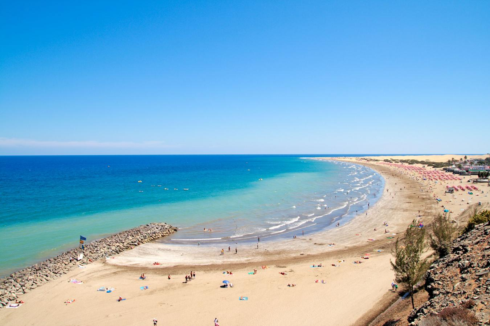
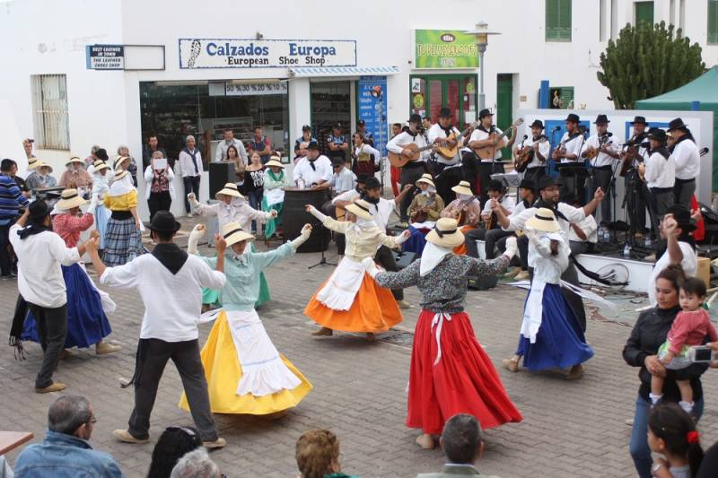
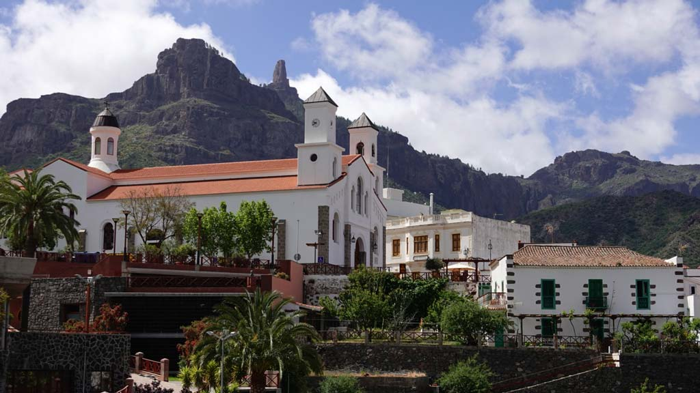
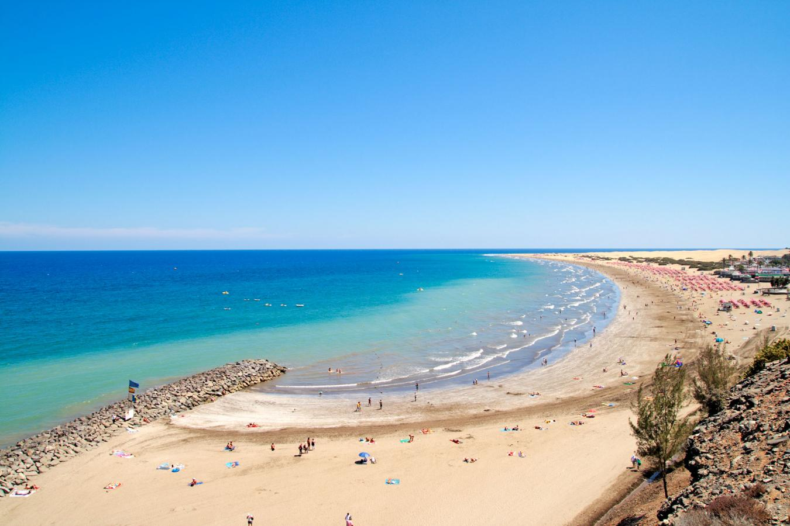
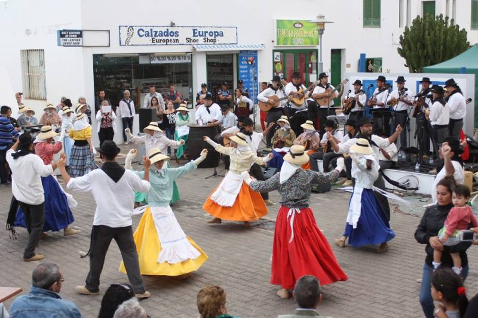
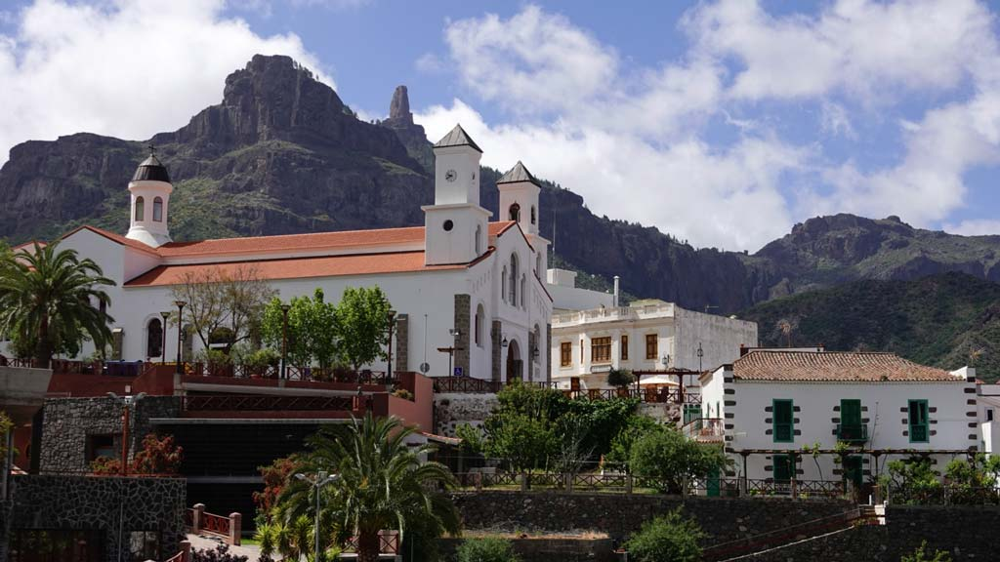

Sobre Gran Canaria
Clima
El clima de Gran Canaria se caracteriza por ser subtropical desértico, con veranos cálidos y secos que promedian entre 20 y 26 grados, y suaves inviernos con temperaturas mínimas que rara vez bajan de los 15 grados. La isla presenta microclimas variados debido a los vientos alisios y su diversa topografía.
Naturaleza
La naturaleza de Gran Canaria es diversa y única, con un paisaje que abarca desde sus playas y acantilados impresionantes hasta frondosos bosques y dunas de arena. La isla alberga una rica biodiversidad, con especies endémicas como el pino canario y el lagarto gigante de Gran Canaria, ofreciendo oportunidades para explorar su belleza natural a través de sus numerosos senderos y parques naturales.
Playa
Las playas de Gran Canaria son famosas por su belleza y diversidad, que van desde extensas y doradas como la Playa del Inglés y Maspalomas, hasta calas tranquilas y pintorescas como Amadores y Güi Güi. Con aguas cristalinas y un clima agradable durante todo el año, las playas ofrecen actividades acuáticas emocionantes y espectaculares puestas de sol, convirtiéndose en destinos populares tanto para turistas como para lugareños.
Galería
 




